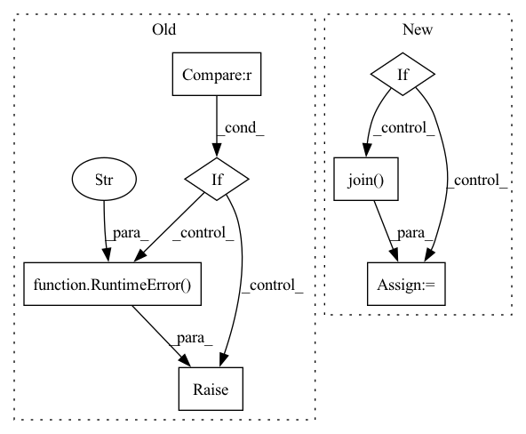

Pattern ID :14555
Before Change
Compute the number of training steps for each epoch.
if self._num_training_steps is None:
if self.trainer.train_dataloader is None :
try:
dataloader = self.train_dataloader()
except NotImplementedError:
raise RuntimeError(
"To use linear warmup cosine annealing lr"
"set the dataloader with .set_loaders(...)"
)
dataset_size = getattr(self, "dali_epoch_size", None) or len(dataloader.dataset)
dataset_size = self.trainer.limit_train_batches * dataset_sizeAfter Change
if self._num_training_steps is None:
try:
dataset = self.extra_args.get("dataset", None)
if dataset not in ["cifar10", "cifar100", "stl10"]:
folder = os.path.join( self.extra_args["data_dir"], self.extra_args["train_dir"])
else:
folder = None
no_labels = self.extra_args.get("no_labels", False)
data_fraction = self.extra_args.get("data_fraction", -1.0)In pattern: SUPERPATTERN
Frequency: 3
Non-data size: 7
Instances Fragment ID: 47905098
Project Name: vturrisi/contrastive-learning
Commit Name: eb07a9c7c2872efb1ae83767f59a67fa616a7652
Time: 2022-05-02
Author: vt.turrisi@gmail.com
File Name: solo/methods/linear.py
M Class Name: LinearModel
N Class Name: LinearModel
M Method Name: num_training_steps(1)
N Method Name: num_training_steps(1)
M Parent Class: pl.LightningModule
N Parent Class: pl.LightningModule
M File Name: solo/methods/linear.py
N File Name: solo/methods/linear.py
M Start Line: 199
M End Line: 208
N Start Line: 184
N End Line: 206
Before Change
self._grad_norm_buf.zero_()
self._grad_norm_buf[self.data_parallel_rank] = grad_norm
distributed_utils.all_reduce(self._grad_norm_buf, group=self.data_parallel_process_group)
if not (self._grad_norm_buf == self._grad_norm_buf[0]) .all():
raise RuntimeError(
"Fatal error: gradients are inconsistent between workers. "
"Try --ddp-backend=no_c10d."
)
def _reduce_and_log_stats(self, logging_outputs, sample_size, grad_norm=None):
if grad_norm is not None:
metrics.log_speed("ups", 1., priority=100, round=2)After Change
group=self.data_parallel_process_group
)
if not self._is_grad_norms_consistent(self._grad_norm_buf):
pretty_detail = "\n".join(
"rank {:3d} = {:.8f}".format(r, n)
for r, n in enumerate(self._grad_norm_buf.tolist())
)
error_detail = "grad_norm across the workers:\n{}\n".format(pretty_detail)
raise RuntimeError(
"Fatal error: gradients are inconsistent between workers. "
"Try --ddp-backend=no_c10d. " Fragment ID: 47905096
Project Name: kssteven418/i-bert
Commit Name: 29b8a4deb58ca9798b61690a31de1ea57de92122
Time: 2020-05-29
Author: yqw@fb.com
File Name: fairseq/trainer.py
M Class Name: Trainer
N Class Name: Trainer
M Method Name: _check_grad_norms(2)
N Method Name: _check_grad_norms(2)
M Parent Class: object
N Parent Class: object
M File Name: fairseq/trainer.py
N File Name: fairseq/trainer.py
M Start Line: 844
M End Line: 852
N Start Line: 853
N End Line: 875
Before Change
Compute the number of training steps for each epoch.
if self._num_training_steps is None:
if self.trainer.train_dataloader is None :
try:
dataloader = self.train_dataloader()
except NotImplementedError:
raise RuntimeError(
"To use linear warmup cosine annealing lr"
"set the dataloader with .set_loaders(...)"
)
dataset_size = getattr(self, "dali_epoch_size", None) or len(dataloader.dataset)
dataset_size = self.trainer.limit_train_batches * dataset_sizeAfter Change
if self._num_training_steps is None:
try:
dataset = self.extra_args.get("dataset", None)
if dataset not in ["cifar10", "cifar100", "stl10"]:
folder = os.path.join( self.extra_args["data_dir"], self.extra_args["train_dir"])
else:
folder = None
no_labels = self.extra_args.get("no_labels", False)
data_fraction = self.extra_args.get("data_fraction", -1.0) Fragment ID: 47905101
Project Name: vturrisi/contrastive-learning
Commit Name: eb07a9c7c2872efb1ae83767f59a67fa616a7652
Time: 2022-05-02
Author: vt.turrisi@gmail.com
File Name: solo/methods/base.py
M Class Name: BaseMethod
N Class Name: BaseMethod
M Method Name: num_training_steps(1)
N Method Name: num_training_steps(1)
M Parent Class: pl.LightningModule
N Parent Class: pl.LightningModule
M File Name: solo/methods/base.py
N File Name: solo/methods/base.py
M Start Line: 383
M End Line: 392
N Start Line: 362
N End Line: 384